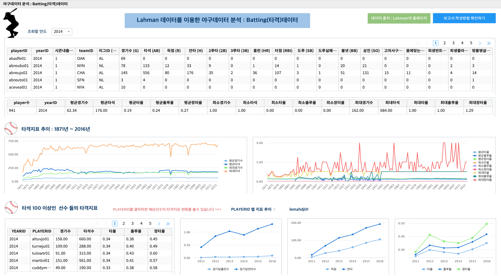
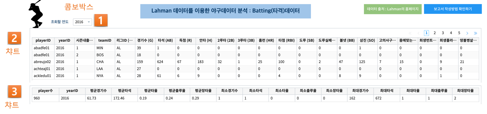
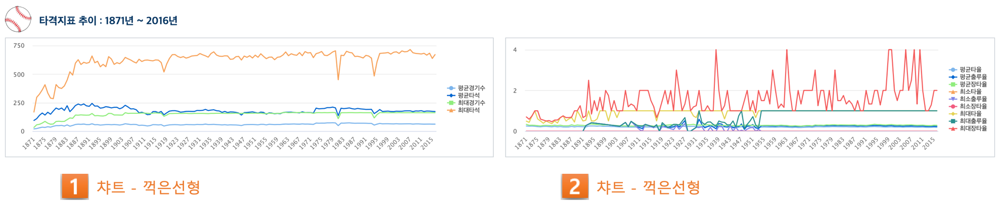
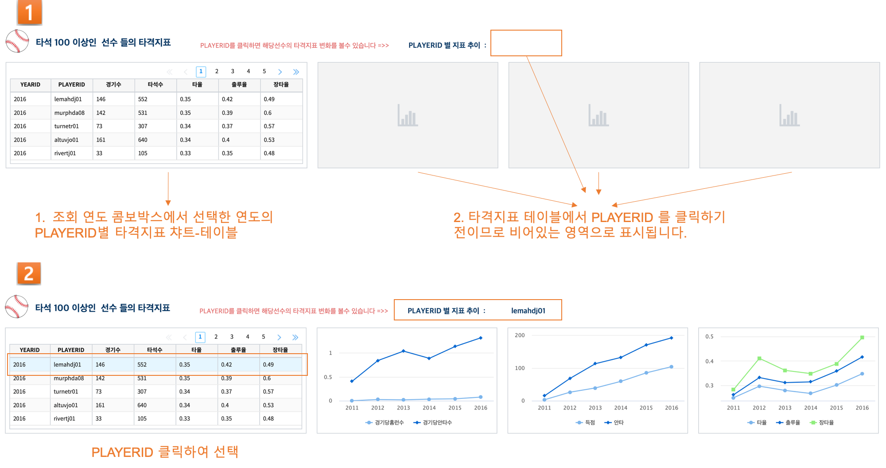

IRIS Studio - 야구 타격 지표¶
Lahman의 홈페이지 에 있는 미국 야구 데이터에서 타격에 관한 데이터인 batting.csv 로 IRIS Studio 에서 여러 지표와 챠트를 만들어 봅니다.
Contents
데이터 준비¶
데이터 가져오기¶
- 출처Lahman 의 홈페이지 .
보고서의 상단 라벨을 클릭하면 Lahman의 홈페이지로 이동합니다.
- Lahman 홈페이지에서 다운받은 zip 을 풀어서 미국 야구의 타격 데이터인 Batting.csv 를 IRIS 에 업로드합니다.
참고로 보고서에 사용된 데이터는 batting.csv 의 “yearID” 컬럼으로부터 PTIME, DECADE 라는 2개의 컬럼을 만들어서 추가한 데이터입니다.
MinIO 에 데이터 업로드¶
- 로컬 PC 에 다운로드된 Batting.csv 파일을 IRIS 의 HDFS브라우저 를 이용하여 MinIO 에 업로드합니다.
참고 - MinIO 홈페이지 MinIO
MinIO 에 BATTING 폴더를 만들고, Batting.csv 를 업로드합니다.
데이터모델 만들기 - MinIO¶
데이터모델 메뉴에서 MinIO 에 저장된 Batting.csv 를 데이터모델로 생성합니다.
- 데이터모델의 이름으로 DEMO_BATTING_NEW 로 생성하며, 연결 정보(MinIO) 와 대상 데이터(Batting.csv)를 선택합니다.
연결 정보 중 유형은 OBJECTSTORAGE 이고, 해당되는 연결정보의 이름을 선택합니다.
생성이 완료된 후에 검색 메뉴에서 데이터 모델 DEMO_BATTING_NEW 를 조회해 봅니다.
보고서 내용 요약¶
1871년 ~ 2016년( DEMO_BATTING_NEW 에 입력한 데이터는 1871 ~ 2016년까지의 batting.csv 입니다 ) 까지의 미국 야구 타격 데이터에서 타율, 출루율, 장타율 등 과 같은 타격 지표를 생성합니다.
그리고 연도별로 타격 지표 추이를 볼 수 있도록 시계열챠트를 그려 보고 선택된 개별 선수(PLAYERID)의 타격 지표도 시계열 챠트로 볼 수 있도록 합니다.
- 연도(yearID)별 데이터
콤보박스에서 선택된 연도의 데이터가 챠트에 그려집니다.
- 선수(PLAYERID) 의 개별 데이터
선수(PLAYERID)를 클릭하면 해당 선수의 개별 타격 지표가 시계열 챠트로 그려집니다.
Studio 보고서 따라하기¶
연도별 데이터 챠트¶
콤보 박스 생성¶
참조 매뉴얼 콤보박스를 활용하여 데이터 필터링하기
- 조회할 연도를 선택하는 콤보박스 만드는 과정입니다.(1번)
디폴트로 2016년을 지정하여 콤보박스를 클릭하지 않고도 자동실행되어 2016년 조회결과가 출력되게 합니다.
챠트-테이블 생성¶
참조 매뉴얼 테이블
- 전체 데이터중에서 콤보박스에서 선택된 연도의 데이터만 **챠트**의 테이블로 출력하는 과정입니다.(2)
데이터 모델 DEMO_BATTING_NEW
검색어 구문 해석 : 검색어에 대한 설명 참조
* yearID = ${combo_1} | fields -PTIME,DECADE
콤보박스에서 연도를 지정하면 ${combo_1} 에 저장되며,
데이터 모델 DEMO_BATTING_NEW 에서 yearID = ${combo_1} 인 데이터만 가져옵니다.
그 중에서 PTIME, DECADE 컬럼은 제외하고 select 합니다.
타격 지표 통계¶
- 조회할 연도의 Batting 데이터로부터 타격지표 통계를 만들어서 테이블로 출력하는 과정입니다.(3)
야구 타격 지표 만드는 검색어 구문입니다.
선택한 챠트의 데이터 탭에서 검색어 박스에서 내용을 확인할 수 있습니다.
* yearID = ${combo_1} | stats sum(G) as sum_G, sum(AB) as sum_AB, sum(R) as sum_R, sum(H) as sum_H, sum(2B) as sum_2B, sum(3B) as sum_3B, sum(HR) as sum_HR, sum(RBI) as sum_RBI, sum(SB) as sum_SB, sum(CS) as sum_CS, sum(BB) as sum_BB, sum(SO) as sum_SO, sum(IBB) as sum_IBB, sum(HBP) as sum_HBP, sum(SH) as sum_SH, sum(SF) as sum_SF, sum(GIDP) as sum_GIDP BY yearID, PLAYERID | sql "select yearID ,PLAYERID, sum_G, sum_AB, sum_H/sum_AB as BA, ((sum_H + sum_BB + sum_HBP ) / ( sum_AB+ sum_BB+ sum_HBP+ sum_SF) )as OBP, ((sum_H + sum_2B + 2 * sum_3B + 3 * sum_HR ) / sum_AB ) as SLG from angora where sum_AB > 0 " | stats count(*) as player수, avg(sum_G) as 평균경기수, avg(sum_AB) as 평균타석, avg(BA) as 평균타율, avg(OBP) as 평균출루율, avg(SLG) as 평균장타율, min(sum_G) as 최소경기수, min(sum_AB) as 최소타석, min(BA) as 최소타율, min(OBP) as 최소출루율, min(SLG) as 최소장타율, max(sum_G) as 최대경기수, max(sum_AB) as 최대타석, max(BA) as 최대타율, max(OBP) as 최대출루율, max(SLG) as 최대장타율 BY yearID
타격 지표 추이 그래프¶
타격 지표 데이터를 시계열로 꺽은 선 챠트로 추이를 확인할 수 있도록 그려봅니다.
챠트-꺾은선형¶
경기수와 타석 데이터를 시계열 챠트로 그립니다.(1)
- 타율, 출루율, 장타율 데이터를 시계열 챠트로 그립니다.(2)
챠트의 시각화 설정은 경기수와 타석 시계열 챠트와 동일합니다.
검색어 구문
*
| stats sum(G) as sum_G,
sum(AB) as sum_AB, sum(R) as sum_R,
sum(H) as sum_H,
sum(2B) as sum_2B,
sum(3B) as sum_3B,
sum(HR) as sum_HR,
sum(RBI) as sum_RBI,
sum(SB) as sum_SB,
sum(CS) as sum_CS,
sum(BB) as sum_BB,
sum(SO) as sum_SO,
sum(IBB) as sum_IBB,
sum(HBP) as sum_HBP,
sum(SH) as sum_SH,
sum(SF) as sum_SF,
sum(GIDP) as sum_GIDP BY YEARID, PLAYERID
| sql "select YEARID, PLAYERID, sum_H/sum_AB as BA,
((sum_H + sum_BB + sum_HBP ) / ( sum_AB+ sum_BB+ sum_HBP+ sum_SF) )as OBP ,
((sum_H + sum_2B + 2 * sum_3B + 3 * sum_HR ) / sum_AB ) as SLG from angora
where sum_AB > 0 "
| adv line avg(BA) as 평균타율, avg(OBP) as 평균출루율, avg(SLG) as 평균장타율,
min(BA) as 최소타율, min(OBP) as 최소출루율, min(SLG) as 최소장타율,
max(BA) as 최대타율, max(OBP) as 최대출루율, max(SLG) as 최대장타율
SPLITROW YEARID COLSIZE 500
타석 100 이상인 선수들의 타격 지표¶
해당 연도의 PLAYERID 별 타격 지표 테이블¶
- 콤보박스에서 선택한 연도의 데이터에서 PLAYERID(선수) 별로 타격지표 통계를 만들어서 가져옵니다.
연도별 데이터 챠트 참조합니다.
검색어 구문
* YEARID = ${combo_1}
| stats sum(G) as sum_G,
sum(AB) as sum_AB,
sum(R) as sum_R,
sum(H) as sum_H,
sum(2B) as sum_2B,
sum(3B) as sum_3B,
sum(HR) as sum_HR,
sum(RBI) as sum_RBI,
sum(SB) as sum_SB,
sum(CS) as sum_CS,
sum(BB) as sum_BB,
sum(SO) as sum_SO,
sum(IBB) as sum_IBB,
sum(HBP) as sum_HBP,
sum(SH) as sum_SH,
sum(SF) as sum_SF,
sum(GIDP) as sum_GIDP BY YEARID, PLAYERID
| sql "select YEARID, PLAYERID, sum_G as 경기수, sum_AB as 타석수, sum_H/sum_AB as 타율,
(sum_H + sum_BB + sum_HBP ) / ( sum_AB+ sum_BB+ sum_HBP+ sum_SF) as 출루율,
((sum_H + sum_2B + 2 * sum_3B + 3 * sum_HR ) / sum_AB) as 장타율 from angora
where sum_AB > 100"
| sort -타율
PLAYERID 별 지표 추이¶
타석 100 이상인 선수들의 타격 지표 에서 클릭한 PLAYERID 의 활동기간별 타격 지표 추이를 3개의 챠트로 보여줍니다.
- 클릭한 PLAYERID 로 라벨이 자동 변경되는 부분
- 라벨 데이터 탭에서 트리거설정 을 체크하고, PLAYERID 별 타격지표 테이블을 체크합니다.
체크를 하면 대상 오브젝트id 를 확인할 수 있습니다.
전체 변수명 보기¶
- 전체 변수명 보기 를 통해 변수명이 ${area_2} 임을 확인할 수 있습니다.
라벨 데이터 탭에서 설정할 변수/값 에서 ${area_2} 로 입력하면 이벤트로 클릭되는 PLAYERID 로 자동으로 변경됩니다.
라벨의 내용이 바뀌는 것은 편집 화면에서는 바로 확인이 안되며, 저장 후 보기 를 통해 확인할 수 있습니다.
PLAYERID 별 챠트¶
- 3개의 챠트는 모두 같은 방식으로 생성됩니다.
경기당 홈런수/안타수 챠트의 데이터탭과 시각화탭은 아래 처럼 설정되었습니다.